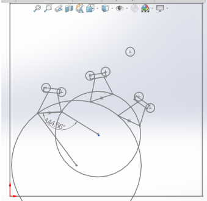
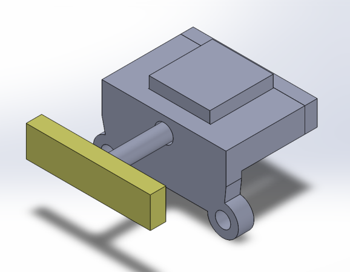
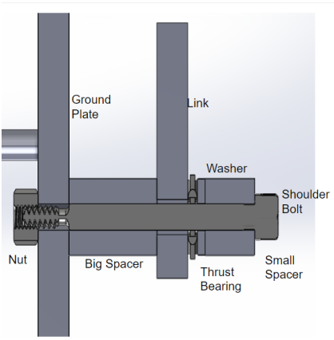
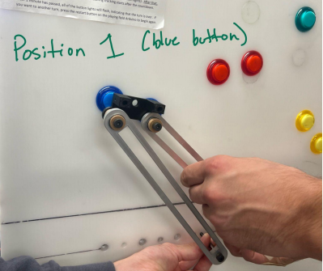
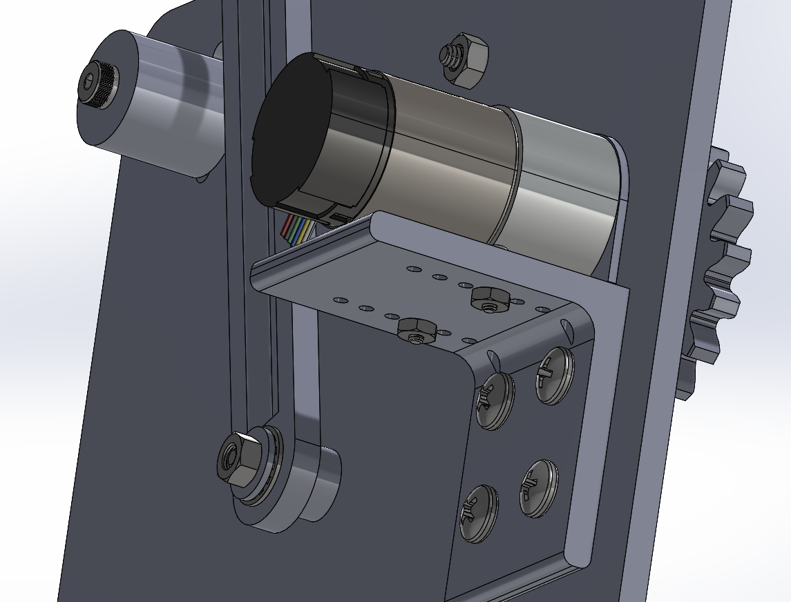
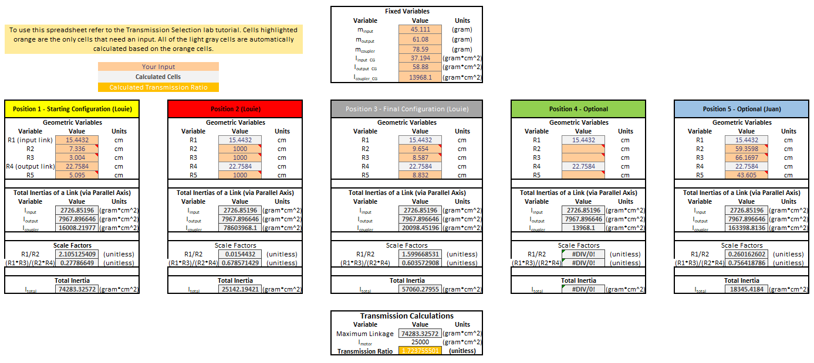
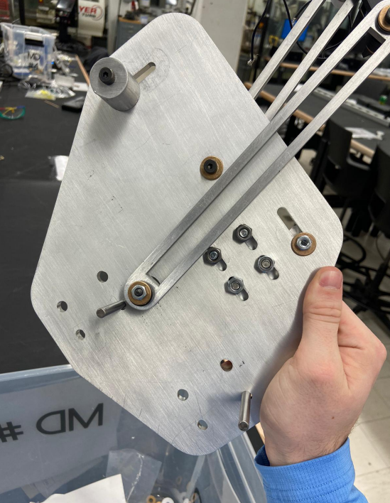
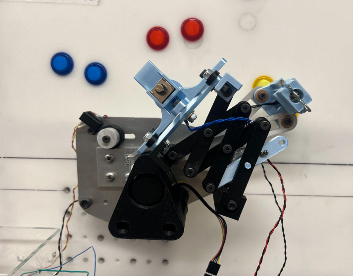
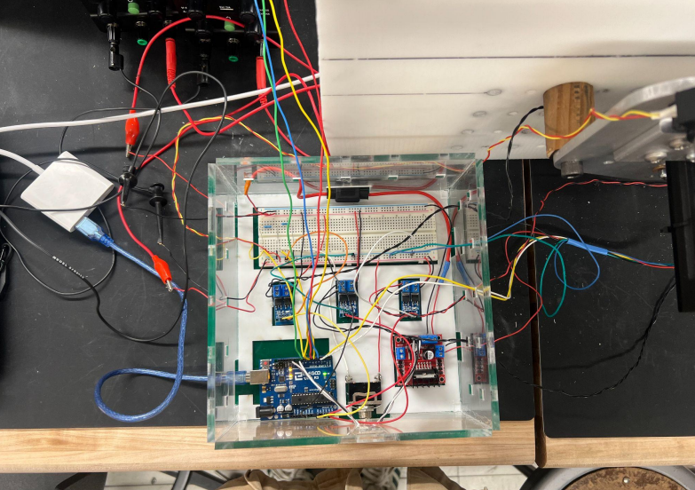
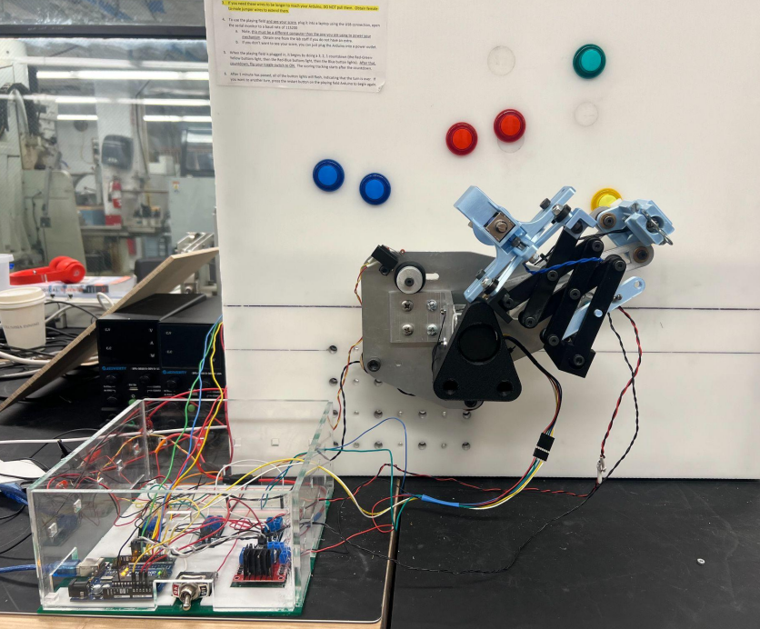

2D Layout of Board
The first step of this project was to create a sketch of the playing field for the board and location of the buttons. The next step was to draw initial designs for a ground pivot point and linkage lengths.

Initial Coupler
This photo shows the first iteration of our coupler, the part of the machine that hits the buttons on the playing field.

Linkage Assembly
Here we have the linkage assembly for one of our links. We are missing an extra thrust bearing that will make the system frictionless so it can move without a problem, this was the first iteration of the system.

First Manufacturing
This was the first bit of manufacturing we did for the project. We 3D printed the coupler, waterjet the links, and pressfit the bearings in the links.

Transmission Design
This CAD includes gears, a pololu 12v dc motor, the links, and all the hardware to mount everything to the board. It holds the DC motor in place with the bracket in the front, and has a transmission ratio of 1.0107.

Transmission Ratio Calculations
This spreadsheet allowed us to calculate the transmission ratio of the linkage and the moment of inertia of the motor using the parallel axis theorem.

Second Manufacturing
Here we have the ground plate of our assembly, which was waterjet and finished on a mill, the links are made via the same process, and the spacers were made on a lathe.

Final Assembly Mechanical
Here we can see the final Mechanical Assembly of the 4 bar linkage button pressing mechanism. The blue and black PLA in the front is our actuating bonus button presser that goes on start up.

Final Assembly Electrical
The brains of this project is an Arduino UNO. The DC motor is connected to a dual H-Bridge motor driver that is able to switch the polarity of the motor. Each solenoid, and the servo to actuate the bonus button mechanism are connected to a transistor.

Full Build
This is a full view of the electronics, mechanical system, and playing field. If you would like to see more, here is an accompanying youtube video: